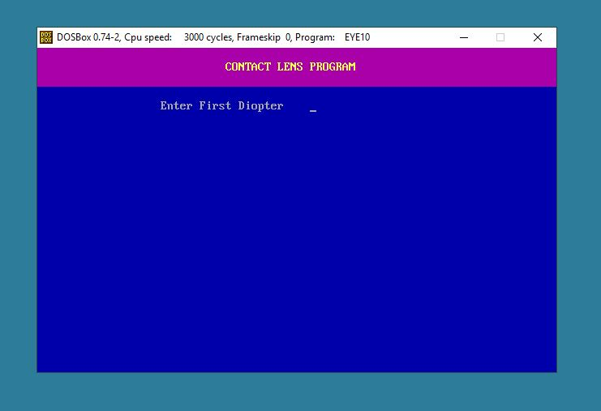
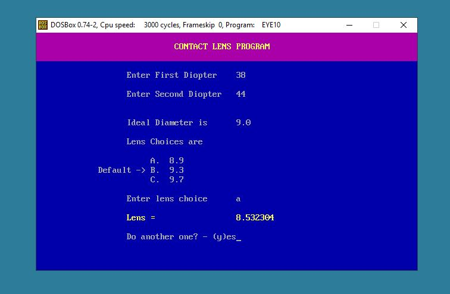

Previous
Index
Next
C Programming
April 10th, 2019
Contact Lens Calculations
By the end of 1992 MS-DOS was in its last days of glory. I had begun writing programs with C and compiling them
with MS-Quick C.
I knew an optometrist in the Sumter, SC computer club. He had a 'BASIC' program that I converted to an
executable C program.
Below are two screen shots of the program running in DOSBox. Old MS-DOS
programs will run on new computers using this virtual MS-DOS.
Install DOSBox and check out eye10.exe. And if you really want to have fun, download the
source code
make some alterations and compile it.

Opening Screen

Screen after input
/* Original program written in "BASIC" */
/* by D. B. Grimland LCDR USN ON 11 DEC 87. */
/* */
/* Converted to the "C" language Dec. 1992 */
/* by Phil Lowder in Sumter, SC. */
/* Compiled with MS QuickC. */
#include <stdio.h>
#include <math.h>
#include <graph.h>
static void determine_video( void );
void do_lens(void);
void enter_diopter(void);
void check_bounds(void);
void set_kf(void);
void get_choice(void);
void do_again(void);
static void determine_video( void );
static unsigned int video_seg = 0;
static char _far *videoptr;
static int columns;
char text[80];
int color;
float kf;
float diopter1, diopter2;
float ideal, choice;
main()
{
determine_video();
_settextwindow(1, 1, 3, 80);
if (color == 1)
{
_setbkcolor(5L);
_settextcolor(14);
}
_clearscreen(_GWINDOW);
_settextposition( 2, 30);
_outtext("CONTACT LENS PROGRAM");
enter_diopter();
check_bounds();
set_kf();
get_choice();
do_lens();
do_again();
}
/*........................*/
void enter_diopter(void)
{
if (color == 1)
{
_setbkcolor(1L);
_settextcolor(7);
}
_settextwindow( 4, 1, 25, 80);
_clearscreen(_GWINDOW);
_settextposition(2, 20);
_outtext("Enter First Diopter ");
scanf("%f", &diopter1);
fflush(stdin);
_settextposition(4, 20);
_outtext("Enter Second Diopter ");
scanf("%f", &diopter2);
fflush(stdin);
}
/*.......................*/
void check_bounds(void)
{
int k;
if ( diopter1 < 38 || diopter1 > 48)
{
_settextposition(3, 20 );
_outtext("Diopter out of bounds ");
do_again();
}
_settextposition(5, 20 );
if ( diopter2 < 38 || diopter2 > 48)
{
_outtext("Diopter out of bounds ");
do_again();
}
}
/*................................*/
void set_kf(void)
{
/* set kf to lesser diopter */
if ( diopter1 <= diopter2)
kf = diopter1;
else
kf = diopter2;
if ( kf >= 38 && kf <= 40)
ideal = 9.0;
else if ( kf > 40 && kf <= 42)
ideal = 8.5;
else if ( kf > 42 && kf <= 44)
ideal = 8.0;
else if ( kf > 44 && kf <= 48)
ideal = 7.5;
_settextposition(7, 20);
sprintf(text, "Ideal Diameter is %.1f", ideal);
_outtext(text);
}
/*................................*/
void get_choice(void)
{
char kar;
_settextposition(9, 20);
_outtext("Lens Choices are");
_settextposition(11, 25);
_outtext("A. 8.9 ");
_settextposition(12, 14);
_outtext("Default ->");
_settextposition(12, 25);
_outtext("B. 9.3 ");
_settextposition(13, 25);
_outtext("C. 9.7 ");
_settextposition(15, 20);
_outtext("Enter lens choice ");
fflush(stdin);
kar = getche();
switch(kar)
{
case 'A':
case 'a':
choice = 8.9;
break;
case 'B':
case 'b':
choice = 9.3;
break;
case 'C':
case 'c':
choice = 9.7;
break;
default :
choice = 9.3;
break;
}
}
/*...............................*/
void do_lens(void)
{
float correction, lens;
float x, y, z, i;
/* find difference, a positive value */
x = diopter1 - diopter2;
if ( x < 0 )
x = diopter2 - diopter1;
i = choice - ideal;
correction = i * .12;
if ( x < 1 && x > .75)
x = .75;
else if ( x < .75 && x > .5)
x = .5;
else if ( x < .5 && x > .25)
x = .25;
else if ( x < .25 && x > .0)
x = 0;
if ( x >= 1)
y = kf + (x/4);
else if ( x = .75)
y = kf;
else if ( x = .5)
y = ( kf - .25 );
else if ( x = .25 )
y = kf - .37;
else if ( x = 0 )
y = kf - .5;
z = ( ( 1 / ( y /.3375)) * 1000 );
lens = z + correction;
if (color == 1)
{
_setbkcolor(1L);
_settextcolor(14);
}
_settextposition(17, 20);
sprintf(text, "Lens = %f", lens);
_outtext(text);
}
/*................................*/
void do_again(void)
{
char ch;
if (color == 1)
{
_setbkcolor(1L);
_settextcolor(7);
}
_settextposition(19, 20);
_outtext("Do another one? - (y)es");
fflush(stdin);
ch = getch();
switch (ch)
{
case 'Y':
case 'y':
main();
break;
default :
exit();
break;
}
}
/*.............................*/
static void determine_video( void )
{
if ( !video_seg )
{
switch ( *((char _far *)0x449) )
{
case 0:
case 1:
case 2:
case 3:
video_seg = 0xB800;
videoptr = (char far *)0xB8000000;
color = 1;
break;
case 7:
video_seg = 0xB000;
videoptr = ( char far *)0xB0000000;
break;
default:
printf( "not in text mode\n" );
exit(0);
}
columns = *( (int _far *)0x44A );
}
}